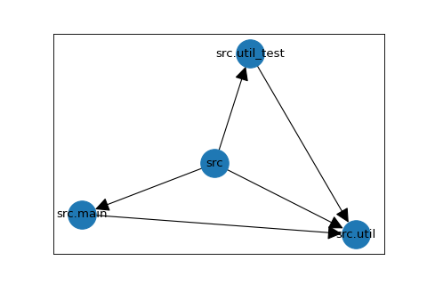
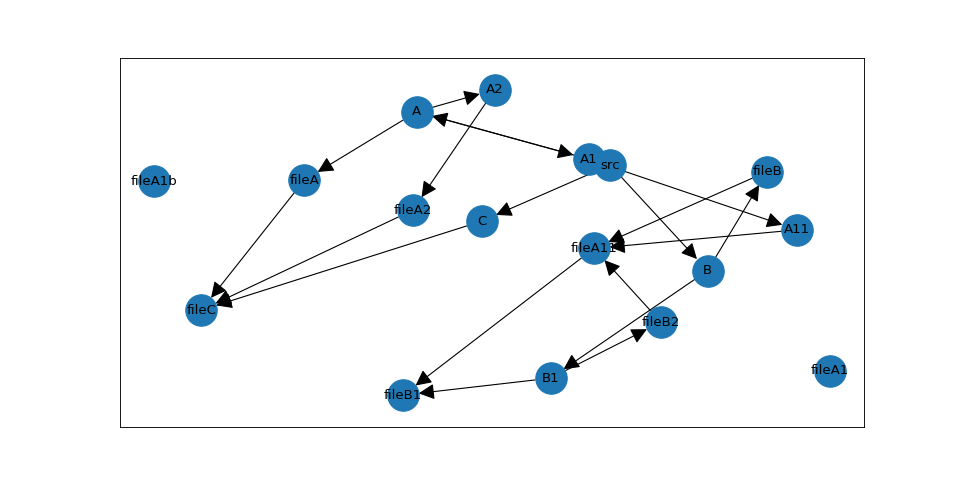

Details
General Concept
PytestArch creates an Abstract Syntax Tree for each Python file it scans. It then extracts only the information about module imports from the AST and converts them to an internal representation. This is currently a graph supplied by the NetworkX library.
When the user defines a rule and evaluates the internal representation against it, the rule is converted into a set of graph operations that are then carried out on the previously generated graph.
Simple Example
Parsing all files
Consider the following project structure:
my_project/
src/
main.py
util.py
util_test.py
Both main.py and util_test.py are importing a util function defined in util.py; no other imports exist.
With "my_project" as the project's root folder and "src" as the folder to evaluate, this will create the following graph:

Each module has a direct path to all submodules, in this case: "src" is connected to all three modules it contains, "src.main", "src.util", and "src.util_test".
In addition, a module that imports another module has an directed edge linking it to this module. For example, "src.main" imports "src.util" and therefore the graph has an edge connecting these modules, with the arrow head pointing at the imported module, in this case "src.util".
Excluding some files
In the example above, the util_test.py file is included in the graph and will be considered when evaluating the architecture.
If certain files should be excluded from the analysis, this can be done by specifying an exclusion pattern. In our example,
if we want to exclude util_test.py, we could use:
from pytestarch.pytestarch import get_evaluable
evaluable = get_evaluable("/home/my_project", "/home/my_project/src", ("*_test.py"))
This will exclude all files with names ending in "_test.py". It is also possible to exclude directories.
More complex example
As a basis for describing the query language, let's consider a more complex example:
/test_project
/src
__init__.py
/A
__init__.py
fileA.py
/A1
__init__.py
fileA1.py
fileA1_b.py
/A11
__init__.py
fileA11.py
/A2
__init__.py
fileA2.py
/B
__init__.py
fileB.py
/B1
__init__.py
fileB1.py
fileB2.py
/C
__init__.py
fileC.py
With the following list of imports:
- fileA imports fileC
- fileA11 imports fileB1
- fileA2 imports fileC
- fileB imports fileA11
- fileB2 imports fileA11
- fileC imports the built-in os module
This creates the following graph (excluding all __init__.py):

Note that the module names in the diagram have been abbreviated: For example, the node "fileA" is actually named "src.A.fileA".
Most of the edges in this graph are due to parent-child relationships between the modules. However, five of the six import relationships defined above are present in the graph - only fileC has no connection to an "os" node; in fact, there is no node names "os" at all.
This has been achieved by setting the exclude_external_libraries flag in the get_evaluable function. All modules that
not located hierarchically below the root path, in this case "test_project", will be excluded from the graph.
Query Language
General Structure
The query language that can be used to define architectural rules follows this structure:
RULE_SUBJECT - VERB_MARKER_1 - IMPORT_TYPE - VERB_MARKER_2 - RULE_OBJECT
The meaning of these structural markers is described in the table below.
| Marker | Description | Example |
|---|---|---|
| RULE_SUBJECT | module(s) to be checked | modules that are named 'B' |
| RULE_OBJECT | module(s) to check against | modules that are submodules of 'A' |
| IMPORT_TYPE | expected type of import relationship | be imported by |
| VERB_MARKER_1 | defines the expected behavior, part I | should not |
| VERB_MARKER_2 | defines the expected behavior, part II | except |
The examples given in the table above combined form the rule modules that are named 'B' (RULE_SUBJECT) should not (VERB_MARKER_1) be imported by (IMPORT_TYPE) modules except (VERB_MARKER_2) modules that are submodules of "A" (RULE_OBJECT).
Looking at the diagram in the section Complex Example, we can see that this rule holds - the only module importing from the "B" module is "fileA11", which is a submodule of "A".
Features
Currently, the following markers are supported by PytestArch:
RULE_SUBJECT
- are_named("X"): applies to module named "X"
- are_submodules_of("Y"): applies to submodules of module named "Y"
RULE_OBJECT
same as RULE_SUBJECT
VERB_MARKER_1
- should()
- should_only()
- should_not()
IMPORT_TYPE + VERB_MARKER_2
- import_modules_that()
- import_modules_except_modules_that()
- be_imported_by_modules_that()
- be_imported_by_modules_except_modules_that()
VERB_MARKER_2 and IMPORT_TYPE have been conflated into one expression to improve readability.
Markers from each category can be combined freely with all markers of all other categories. Example rules could be
modules_that()
.are_sub_modules_of("A")
.should_only()
.be_imported_by_modules_that()
.are_sub_modules_of("B") (True in the above example).
or
modules_that()
.are_named("C")
.should_only()
.be_imported_by_modules_that()
.are_named("A2") (False, also imported by module "A").
Most rules are so close to the English language that a detailed explanation seems unnecessary. An exception might be the VERB_MARKER_2 "except". A combination of this VERB_MARKER_2 and every type of VERB_MARKER_1 and IMPORT_TYPE is given below as reference (M1, M2 are used as RULE_SUBJECT and RULE_OBJECT respectively; pseudo code for brevity):
| Rule | Explanation |
|---|---|
| M1 should import except M2 | M1 should import at least one module that isn't M2, but can also import M2 |
| M1 should only import except M2 | M1 should import at least one module that isn't M2 and should not import M2 |
| M1 should not import except M2 | M1 should not import any module other than M2, but does not have to import M2 |
| M1 should be imported except by M2 | at least one module that isn't M2 should import M1 (M2 can import M1 as well) |
| M1 should only be imported except by M2 | at least one module that isn't M2 should import M1, and M2 cannot import M1 |
| M1 should not be imported except by M2 | no module other than M2 should import M1, but M2 does not have to import M1 |